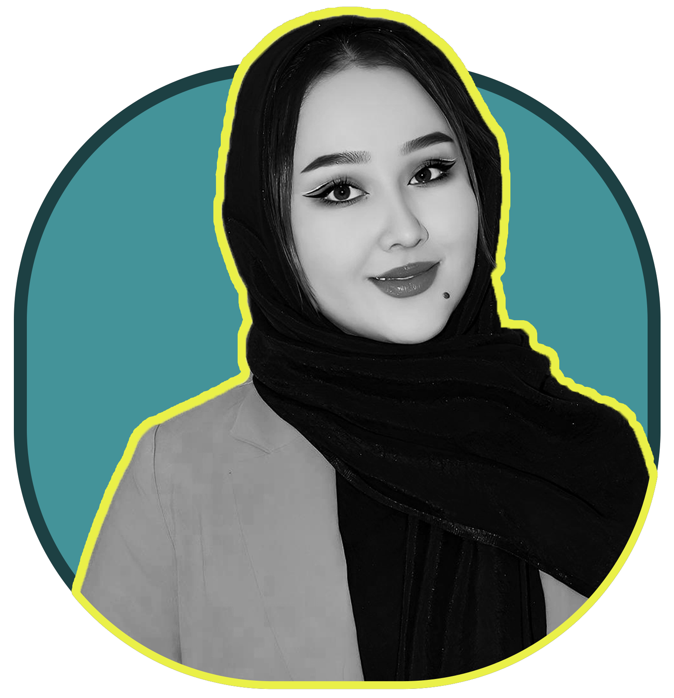

My Portfolio
Graphic designer, Illustrator
Web Designer
About Me
Tahera Nik Manish
Everyone has a story in their life, my story was to become an artist, I was interested in art since I was a child and I tried to become a successful artist, I studied graphic design at Herat University, two years in offices as Officially, I worked as a graphic designer, but I did not limit myself and besides, I draw, mural, illustrate, and sometimes write and photograph. And now, in addition to graphic design, I am also active in website design, coding is really enjoyable and pleasant.